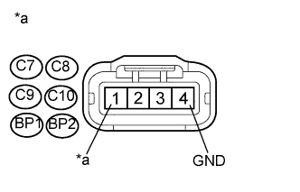

DTC P0351 Цепь низкого/высокого напряжения катушки зажигания "A" |
DTC P0352 Цепь низкого/высокого напряжения катушки зажигания "B" |
DTC P0353 Цепь низкого/высокого напряжения катушки зажигания "C" |
DTC P0354 Цепь низкого/высокого напряжения катушки зажигания "D" |
DTC P0355 Цепь низкого/высокого напряжения катушки зажигания "E" |
DTC P0356 Цепь низкого/высокого напряжения катушки зажигания "F" |
| № DTC | Условие обнаружения DTC | Неисправный участок |
| P0351 P0352 P0353 P0354 P0355 P0356 | Во время работы двигателя в ECM не поступает сигнал IGF (логика диагностирования за 1 поездку). |
|
| Параметр / Устройство | Описание |
| Контакт | CH1: IGT1, IGT2, IGT3, IGT4, IGT5, IGT6 - E1 CH2: IGF1 - E1 |
| Настройка оборудования | 2 В/дел. 20 мс/дел. |
| Условие | Прокручивание коленчатого вала стартером или работа двигателя на холостом ходу |
| 1.ПРОВЕРЬТЕ КАТУШКУ ЗАЖИГАНИЯ (ПИТАНИЕ) |
|  |
Отсоедините разъем катушки зажигания.
Измерьте сопротивление в соответствии со значениями, приведенными в таблице ниже.
| Контакты для подключения диагностического прибора | Условие | Заданные условия |
| C7-4 (GND) - масса | Всегда | Менее 1 Ом |
| C8-4 (GND) - масса | Всегда | Менее 1 Ом |
| C9-4 (GND) - масса | Всегда | Менее 1 Ом |
| C10-4 (GND) - масса | Всегда | Менее 1 Ом |
| C11-4 (GND) - масса | Всегда | Менее 1 Ом |
| C12-4 (GND) - масса | Всегда | Менее 1 Ом |
Измерьте напряжение в соответствии со значениями, приведенными в таблице.
| Контакты для подключения диагностического прибора | Положение переключателя | Заданные условия |
| C7-1 (+B) - C7-4 (GND) | Зажигание включено (IG) | 11 - 14 В |
| C8-1 (+B) - C8-4 (GND) | Зажигание включено (IG) | 11 - 14 В |
| C9-1 (+B) - C9-4 (GND) | Зажигание включено (IG) | 11 - 14 В |
| C10-1 (+B) - C10-4 (GND) | Зажигание включено (IG) | 11 - 14 В |
| C11-1 (+B) - C11-4 (GND) | Зажигание включено (IG) | 11 - 14 В |
| C12-1 (+B) - C12-4 (GND) | Зажигание включено (IG) | 11 - 14 В |
| *a | Вид спереди разъема со стороны жгута проводов: (к катушке зажигания) |
Подсоедините разъем катушки зажигания.
|
| ||||
| OK | |
| 2.ПРОВЕРЬТЕ ЖГУТ ПРОВОДОВ И РАЗЪЕМ (КАТУШКА ЗАЖИГАНИЯ - ЕСМ) |
Отсоедините разъем катушки зажигания.
Отсоедините разъем ЭБУ.
Измерьте сопротивление в соответствии со значениями, приведенными в таблице ниже.
| Контакты для подключения диагностического прибора | Условие | Заданные условия |
| C7-2 (IGF) - C36-6 (IGF1) | Всегда | Менее 1 Ом |
| C8-2 (IGF) - C36-6 (IGF1) | Всегда | Менее 1 Ом |
| C9-2 (IGF) - C36-6 (IGF1) | Всегда | Менее 1 Ом |
| C10-2 (IGF) - C36-6 (IGF1) | Всегда | Менее 1 Ом |
| C11-2 (IGF) - C36-6 (IGF1) | Всегда | Менее 1 Ом |
| C12-2 (IGF) - C36-6 (IGF1) | Всегда | Менее 1 Ом |
| C7-3 (IGT1) - C36-24 (IGT1) | Всегда | Менее 1 Ом |
| C8-3 (IGT2) - C36-25 (IGT2) | Всегда | Менее 1 Ом |
| C9-3 (IGT3) - C36-26 (IGT3) | Всегда | Менее 1 Ом |
| C10-3 (IGT4) - C36-27 (IGT4) | Всегда | Менее 1 Ом |
| C11-3 (IGT5) - C36-28 (IGT5) | Всегда | Менее 1 Ом |
| C12-3 (IGT6) - C35-25 (IGT6) | Всегда | Менее 1 Ом |
| Контакты для подключения диагностического прибора | Условие | Заданные условия |
| C7-2 (IGF) или C36-6 (IGF1) - масса | Всегда | 10 кОм или более |
| C8-2 (IGF) или C36-6 (IGF1) - масса | Всегда | 10 кОм или более |
| C9-2 (IGF) или C36-6 (IGF1) - масса | Всегда | 10 кОм или более |
| C10-2 (IGF) или C36-6 (IGF1) - масса | Всегда | 10 кОм или более |
| C11-2 (IGF) или C36-6 (IGF1) - масса | Всегда | 10 кОм или более |
| C12-2 (IGF) или C36-6 (IGF1) - масса | Всегда | 10 кОм или более |
| C7-3 (IGT1) или C36-24 (IGT1) - масса | Всегда | 10 кОм или более |
| C8-3 (IGT2) или C36-25 (IGT2) - масса | Всегда | 10 кОм или более |
| C9-3 (IGT3) или C36-26 (IGT3) - масса | Всегда | 10 кОм или более |
| C10-3 (IGT4) или C36-27 (IGT4) - масса | Всегда | 10 кОм или более |
| C11-3 (IGT5) или C36-28 (IGT5) - масса | Всегда | 10 кОм или более |
| C12-3 (IGT6) или C35-25 (IGT6) - масса | Всегда | 10 кОм или более |
Подсоедините разъем катушки зажигания.
Подсоедините разъем ECM.
|
| ||||
| OK | |
| 3.ПРОВЕРЬТЕ, ВОЗОБНОВЛЯЕТСЯ ЛИ ВЫВОД DTC (DTC P0351, P0352, P0353, P0354, P0355 ИЛИ P0356) |
Подсоедините портативный диагностический прибор к DLC3.
Включите зажигание (IG) и включите портативный диагностический прибор.
Сбросьте коды DTC (Нажмите здесь).
Неправильный порядок расположения катушек зажигания в сборе (между цилиндрами № 1 - № 6).
Выполните проверку с имитацией условий возникновения неисправности.
Проверьте коды DTC, отображаемые на портативном диагностическом приборе.
| Результат | Следующий шаг |
| Выводится такой же DTC | А |
| Выводится другой код DTC, связанный с катушкой зажигания | B |
|
| ||||
| А | ||
| ||